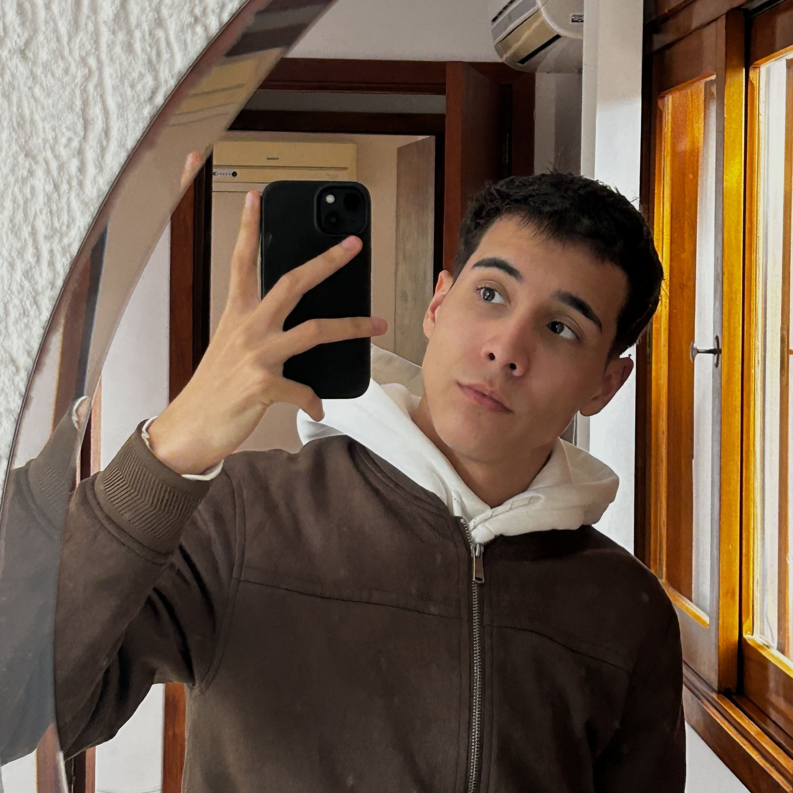

Lorenzo Pereira
Desenvolvedor em formação

Desenvolvedor em formação
Sou um desenvolvedor em constante evolução, com base sólida iniciada no Ensino Técnico em Informática e hoje aprofundada na graduação de Informática Biomédica pela UFCSPA. Minha trajetória é marcada pela curiosidade em entender como a tecnologia pode transformar setores complexos. Tenho foco principal em desenvolvimento com Java e Desenvolvimento WEB, buscando sempre aplicar as melhores práticas de lógica e organização de código. Acredito que o aprendizado contínuo e a prática constante são as chaves para construir soluções de software que realmente geram impacto.

Minha jornada na tecnologia começou no Instituto Estadual de Educação Solon Tavares, onde realizei minha formação técnica em Informática ao longo de dois anos. Foi um período de imersão total, onde construí uma base sólida que une teoria e prática. Durante o curso, explorei o ciclo completo de desenvolvimento, desde a Lógica de Programação e POO (Programação Orientada a Objetos) com Java, Banco de Dados, até a criação de soluções modernas para Web e Mobile. Além da parte técnica, o currículo incluiu Inglês Instrumental, o que será fundamental para meu crescimento como desenvolvedor em um mercado global.
Atualmente, amplio minhas fronteiras técnicas na graduação de Informática Biomédica pela UFCSPA, um curso multidisciplinar que une o rigor da Saúde com o poder de inovação da Tecnologia. Embora em formação, minha trajetória acadêmica já me proporcionou o domínio de conceitos indispensáveis para o desenvolvimento de softwares de alto nível. Aprofundei significativamente meu conhecimento em Lógica de Programação e Programação Orientada a Objetos (POO).No momento, direciono meus estudos para Engenharia de Software e Sistemas de Banco de Dados, buscando entender não apenas como codificar, mas como arquitetar sistemas escaláveis e eficientes que atendam às demandas de setores complexos.